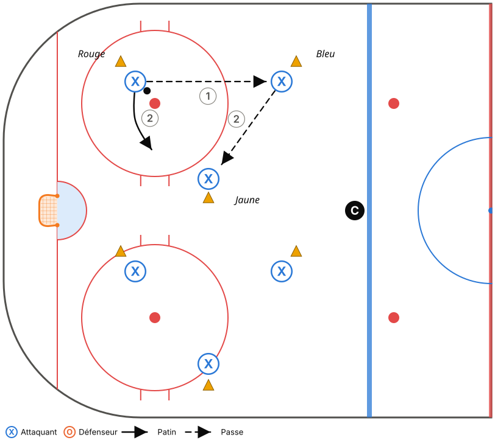
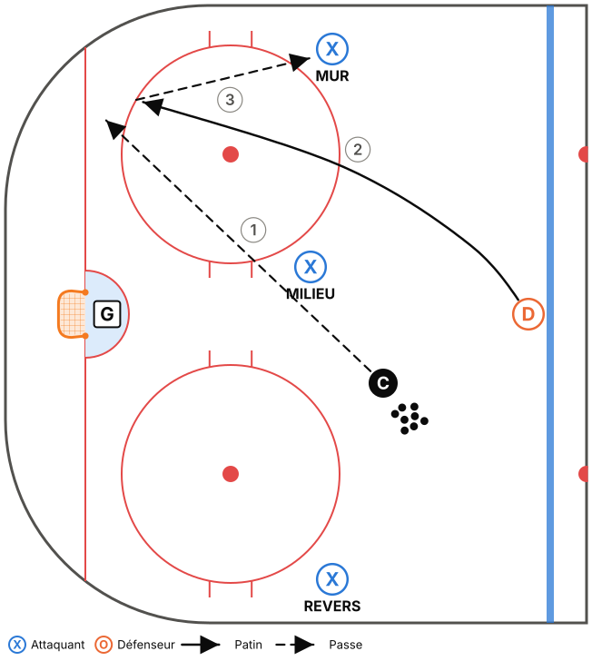
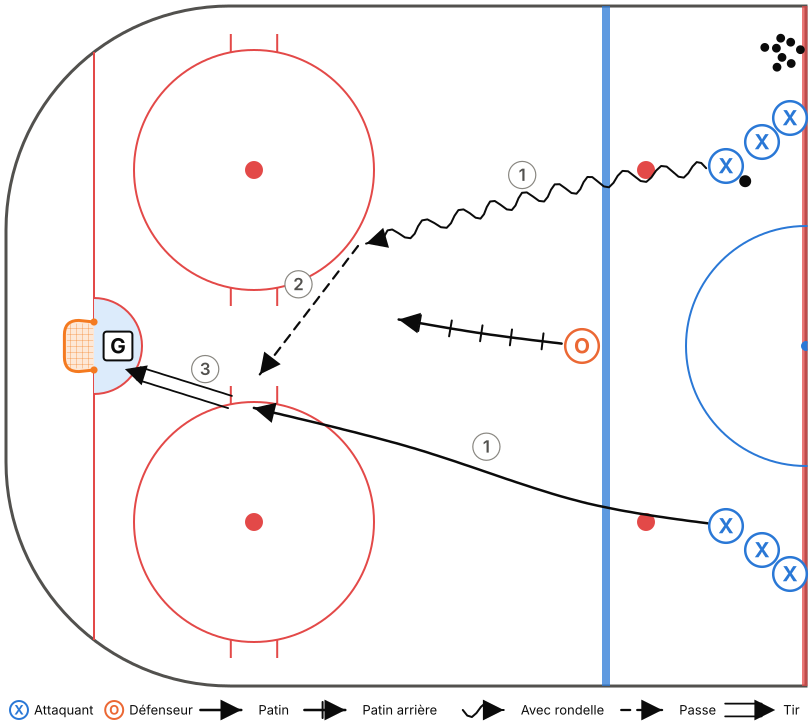

Thème : Zone défensive : PRESSION – SOUTIEN – FILET
Glace : Demi-glace, 50 min (45 min d'exercices + 5 min de consignes et transitions)
Fiche générée à partir de
outils/modeles.js. Pour la modifier, ouvreoutils/plan-pratique.htmlet charge le modèle « M11-B – Semaine 1 ».
Objectifs
- Introduire les rôles en zone défensive (phase 1).
- Tête sur l'épaule avant de toucher la rondelle.
- Lecture du 2c1 : « fais choisir le défenseur ».
Tableau (vestiaire)
Vestiaire (3 min) : dessiner la zone défensive, les 4 rôles, et demander : « Pourquoi il faut toujours quelqu'un devant le filet? »
Déroulement
| Heure | Code | Exercice | Catégorie | Min | Notes |
|---|---|---|---|---|---|
| 0:00–0:05 | T01 | Échauffement aux cercles – croisés avant et arrière | Technique | 5 | Demi-glace : 3 groupes (2 cercles + demi-cercle central). Rondelle au 2e tour. Le coach lève des doigts : les joueurs crient le nombre. |
| 0:05–0:11 | T13 | Passes à 3 avec décision (couleurs) | Technique | 6 | Commencer par 2 couleurs, puis 3. |
| 0:11–0:18 | T12 | Récupération derrière le filet – tête sur l'épaule | Technique | 7 | Tous les joueurs passent (pas seulement les D). Couleurs : bleu = MUR, rouge = MILIEU, blanc = REVERS. |
| 0:18–0:23 | T11 | Passe par la bande et réception au mur | Technique | 5 | L'ailier crie MUR! avant de recevoir. |
| 0:23–0:29 | TI03 | 2c1 – « Fais choisir le défenseur » | Tactique individuelle | 6 | Après chaque essai, demander au porteur : « Qu'est-ce que le D a fait? » |
| 0:29–0:34 | TI12 | Couverture de la pointe par l'ailier | Tactique individuelle | 5 | Enchaîner : l'interception → sortie le long du MUR. |
| 0:34–0:39 | TC05 | Zone défensive 5c0 dans l'ombre | Tactique collective | 5 | Ralenti seulement. Arrêts sur image : chaque joueur nomme son rôle. |
| 0:39–0:45 | TC11 | Petits jeux à règles (cross-ice) | Tactique collective | 6 | Règle : un but compte seulement si un joueur est devant le filet (FILET!). |
Répartition du temps
| Catégorie | Minutes | % réel | Cible Hockey Québec |
|---|---|---|---|
| Technique | 23 | 51,1 % | 50 % ✓ |
| Tactique individuelle | 11 | 24,4 % | 25 % ✓ |
| Tactique collective | 11 | 24,4 % | 25 % ✓ |
Détail des exercices
T01 – Échauffement aux cercles – croisés avant et arrière
Technique · Pleine glace

Objectif : Réchauffer et travailler les croisés dans les deux sens.
Organisation : Un groupe par cercle (5 cercles). Aucune rondelle, puis avec rondelle.
Adaptation demi-glace : Utiliser les 2 cercles de la zone et le demi-cercle central : 3 groupes au lieu de 5.
- Croisés avant autour du cercle, 2 tours dans chaque sens.
- Croisés arrière, 2 tours dans chaque sens.
- Au sifflet, sprint vers le cercle suivant.
- Reprendre avec rondelle.
Points clés : Genoux fléchis · Pousser avec le pied de l'extérieur ET le pied de l'intérieur · Tête haute
T13 – Passes à 3 avec décision (couleurs)
Technique · Demi-glace · Décisionnel (IQ)

Objectif : Travailler la passe en ajoutant une décision rapide (IQ en contexte technique).
Organisation : Groupes de 3 dans un triangle de 3 cônes de couleur. Un joueur au centre.
- Les 3 joueurs se passent la rondelle en se déplaçant d'un cône à l'autre.
- Le coach crie une couleur : le porteur doit passer au joueur le plus près de ce cône.
- Changer de rôle aux 45 s.
Points clés : Regarder AVANT de recevoir · Se déplacer vers un espace libre après sa passe · Passe à plat
T12 – Récupération derrière le filet – tête sur l'épaule
Technique · Zone · Décisionnel (IQ)

Objectif : Récupérer une rondelle derrière le filet en regardant par-dessus l'épaule avant de la toucher.
Organisation : D à la ligne bleue. Coach au centre avec des rondelles. 3 cibles : MUR, MILIEU, REVERS (joueurs ou cônes).
- Le coach lance la rondelle dans un coin ou derrière le filet.
- Le D pivote, patine vers la rondelle et regarde par-dessus son épaule.
- Pendant ce temps, le coach lève une couleur : le D doit passer à l'option correspondante.
Points clés : Tête sur l'épaule AVANT d'arriver à la rondelle · Ramasser la rondelle en mouvement · Passe ferme
T11 – Passe par la bande et réception au mur
Technique · Zone

Objectif : Maîtriser la passe par la bande et la réception dos à la bande (sortie de zone).
Organisation : D derrière le filet avec des rondelles, ailiers sur la bande à la ligne des hachures.
- Le D fait une passe (directe ou par la bande) à l'ailier au MUR.
- L'ailier reçoit dos à la bande, pivote vers le haut et accélère le long de la bande jusqu'à la ligne rouge.
- Les deux côtés en alternance.
Points clés : Ailier : dos à la bande, voir le jeu avant de recevoir · Passeur : viser la bande 1 m devant le receveur · Recevoir en protégeant la rondelle
TI03 – 2c1 – « Fais choisir le défenseur »
Tactique individuelle · Demi-glace · Décisionnel (IQ)

Objectif : Lire le défenseur sur un 2c1 : s'il prend le porteur, on passe; s'il prend la passe, on tire.
Organisation : 2 files d'attaquants à la ligne rouge, un défenseur à la ligne bleue. Un gardien.
- Les 2 attaquants partent avec une rondelle, le D recule.
- Le porteur attaque le D. Le 2e attaquant va au filet.
- Après chaque essai, le coach demande au porteur : « Qu'est-ce que le D a fait? »
Points clés : Porteur : attaquer le D pour le forcer à choisir · 2e attaquant : bâton sur la glace, va au filet · D : rester au centre, bâton dans la ligne de passe
TI12 – Couverture de la pointe par l'ailier
Tactique individuelle · Zone · Décisionnel (IQ)

Objectif : L'ailier défensif doit voir la rondelle ET son joueur, et bloquer la ligne de passe vers la pointe.
Organisation : Coach dans le coin avec des rondelles, adversaire à la pointe, ailier en position de HAUTEUR.
- Le coach essaie de passer à la pointe.
- L'ailier coupe la ligne de passe avec son bâton ou se déplace pour bloquer le tir.
- S'il intercepte, il part en sortie de zone le long du MUR.
Points clés : Position entre la pointe et l'enclave · Tête qui pivote : rondelle, joueur, rondelle · Partir dès que l'équipe récupère la rondelle
TC05 – Zone défensive 5c0 dans l'ombre
Tactique collective · Zone · Décisionnel (IQ)

Objectif : Apprendre les positions en zone défensive selon l'emplacement de la rondelle.
Organisation : 5 joueurs en zone défensive. Le coach (ou 2 assistants) déplace la rondelle en zone (coins, bande, pointe, derrière le filet).
- Le coach déplace lentement la rondelle. Les 5 joueurs s'ajustent sans contact.
- Arrêt sur image : chaque joueur nomme son rôle (PRESSION, SOUTIEN, FILET, HAUTEUR).
- Au sifflet, le coach lance la rondelle et l'équipe fait la sortie de zone.
Points clés : M11 : Pression – Soutien – Filet + 2 en hauteur · M15 : Boîte + 1, toujours un D au filet · Bâton sur la glace
TC11 – Petits jeux à règles (cross-ice)
Tactique collective · Tiers de glace · Décisionnel (IQ)

Objectif : Beaucoup de touches de rondelle et de décisions, avec une règle qui renforce un principe du système.
Organisation : 3c3 ou 4c4 dans une zone (largeur de la patinoire), 2 filets. Changements de 45 s.
- Choisir une règle selon la notion à travailler :
- • But compte double si tous les joueurs ont touché la rondelle (soutien).
- • But compte seulement si un joueur est devant le filet (FILET).
- • Il faut ramener la rondelle au-delà d'une ligne de cônes après une récupération (transition / sortie de zone).
- • M15 : but compte double sur un rebond.
Points clés : Le coach ne s'arrête pas pour expliquer : il pose des questions au banc · Changer de règle aux 3-4 min